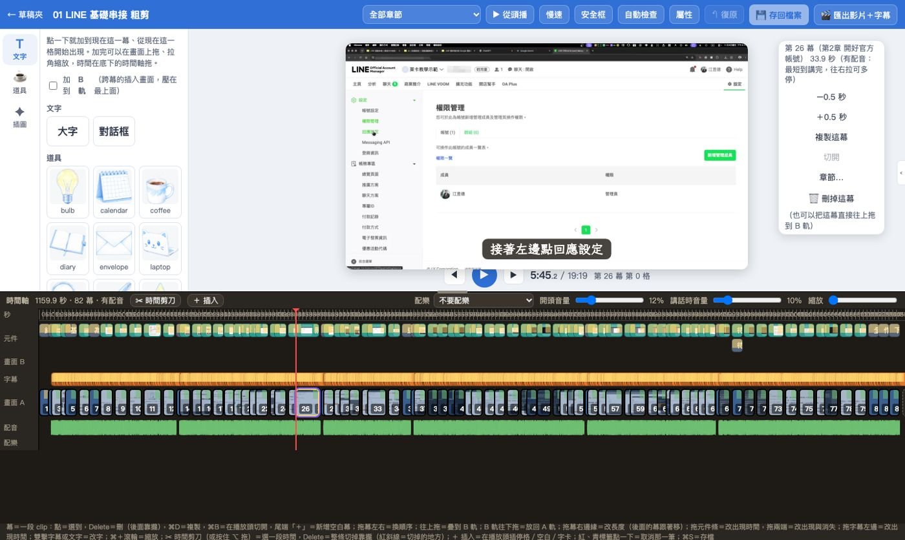

01
AI 先剪，你在剪輯台上改
我做過AI 先剪好初剪，你在一個網頁剪輯頁面上改字、拖位置、調長短。

- AI 幫你做什麼
- 把素材、字幕、配音、配樂先排成一條時間軸，放進一個可以在瀏覽器裡改的剪輯頁面；你改完，它再匯出影片、字幕檔和封面。
- 適合什麼影片
- 線上講座、課程錄影、口播、說明片，或任何要改好幾輪的影片。
- 你要先準備
- 素材（錄影、圖片）和一份腳本或逐字稿。
- 用到的工具
- 請會寫程式的 AI（我用 Claude Code）做剪輯頁面；不會寫程式可以先只請 AI 排時間軸。
我的案例我開線上講座，會把上課錄影用 AI 重剪成一段一段：AI 先把錄影切好、排好字幕和配音，我在剪輯台上改。左邊是 LINE AI 應用課第一堂的剪輯台，19 分鐘的課剪成 82 幕。剪輯台是我請會寫程式的 AI 做出來的；不會寫程式的話，可以先請 AI 排好時間軸，再放進你習慣的剪輯軟體。
當場練習：把這段話貼給你的 AI
我有一段影片素材和一份腳本：［貼上腳本］。 請先幫我排出初剪的時間軸：每一段用哪個素材、從幾秒到幾秒、字幕放哪句。 用表格列出來，我會逐段改。